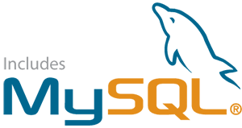
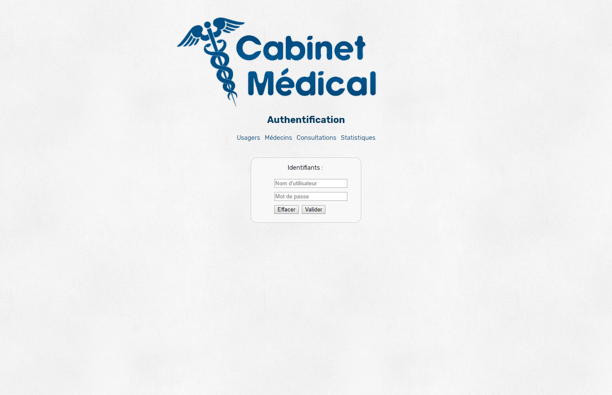
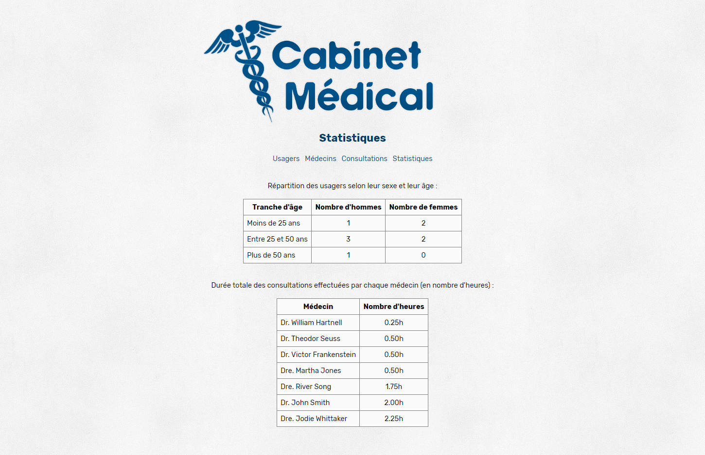
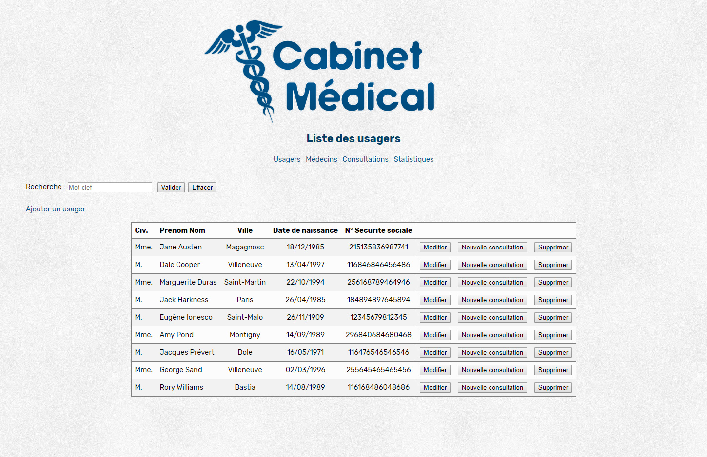
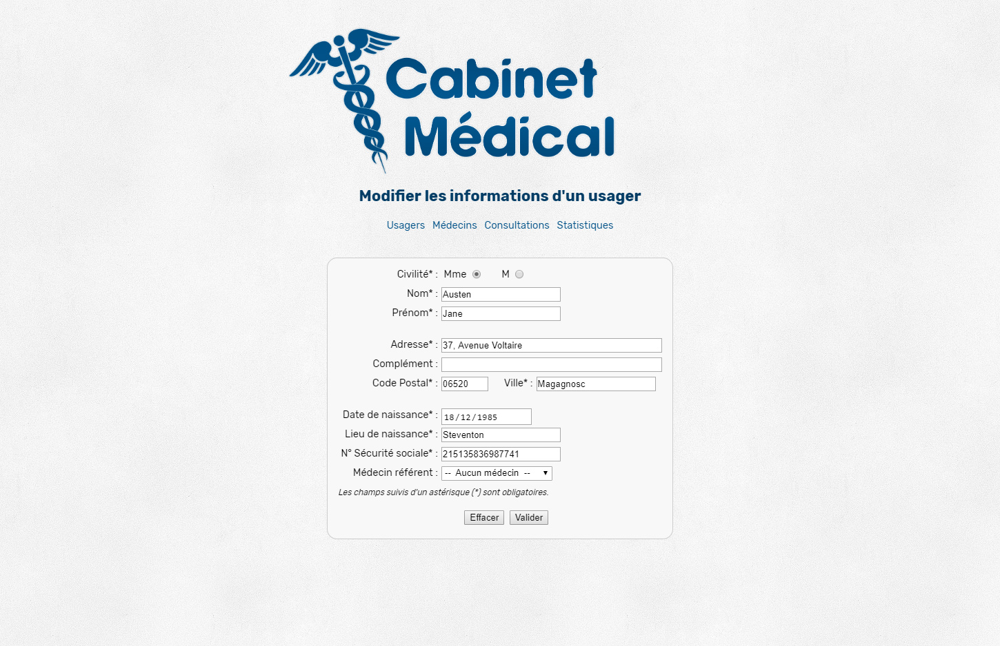

Projets Étudiants
Site de cabinet médical (Décembre 2017 - Janvier 2018)
Objectif : Développer les pages d'un site web dynamique de cabinet médical et créer sa base de données pour permettre l'ajout, la modification et la suppression de données.
Contexte : Travail en binôme, 2e année à l'IUT Informatique Paul Sabatier.
Outils :

Note finale : 20/20




Made with by Benoît Pannetier © 2019
Finding Space by Takahiro Sakamoto